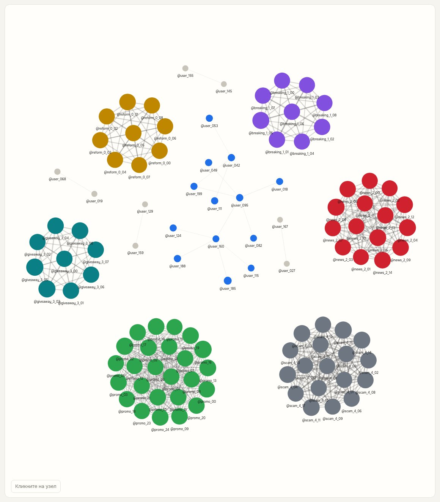
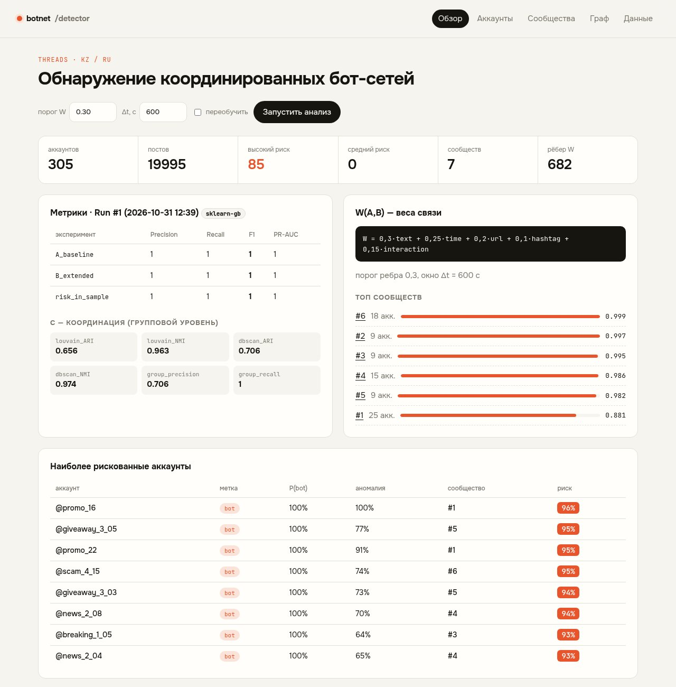
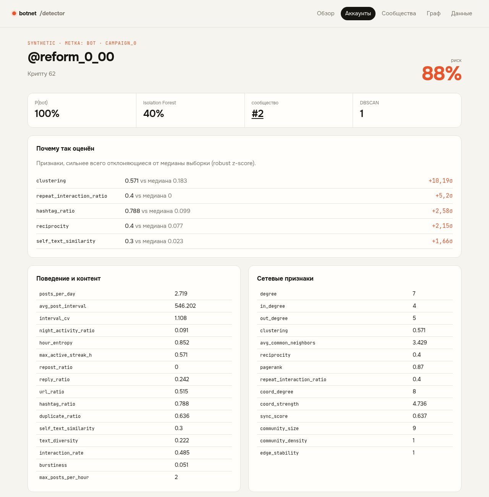

Дипломный проект · ML + графовый анализ · Threads KZ/RU
Исследовательская система, которая ищет не отдельных ботов, а скоординированные группы: по поведению, контенту, времени и связям между аккаунтами.
Аккаунт публикует 8–15 постов в день и не выглядит аномальным. Обычный классификатор оценит его как человека.
Десятки аккаунтов публикуют похожие тексты и одинаковые ссылки в короткие интервалы времени.
Повышает ли анализ связей и синхронности качество обнаружения координированных групп?
Гипотеза: гибридный метод даёт лучшее групповое обнаружение, чем анализ только отдельных аккаунтов.
связь между аккаунтами
W(A,B) = w₁·Text + w₂·Time + w₃·URL + w₄·Hashtag + w₅·Interaction
wᵢ ≥ 0, Σwᵢ = 1 · веса и порог ребра подбираются на валидации
posts_per_day · avg_post_interval · interval_cv · night_activity_ratio · hour_entropy · max_active_streak_h · repost_ratio · reply_ratio · burstiness
duplicate_ratio · self_text_similarity · text_diversity · url_ratio · hashtag_ratio · interaction_rate
degree · clustering · reciprocity · pagerank · common_neighbors · sync_score · community_density · edge_stability



Разбиение по аккаунтам и времени, контроль утечек. Модель с Twitter/X не переносится на Threads без проверки.
Python 3.12 · Django 5.2 LTS · scikit-learn · XGBoost · NetworkX · PostgreSQL / SQLite
# установка
pip install -r requirements.txt
python manage.py migrate
# 300 аккаунтов, 5 кампаний
python manage.py generate_synthetic --reset
python manage.py run_analysis --retrain
python manage.py runserver